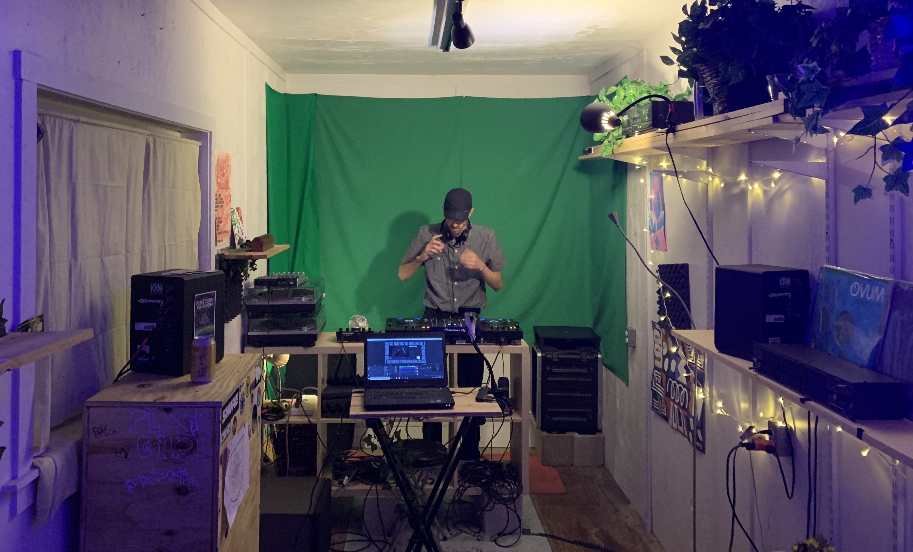
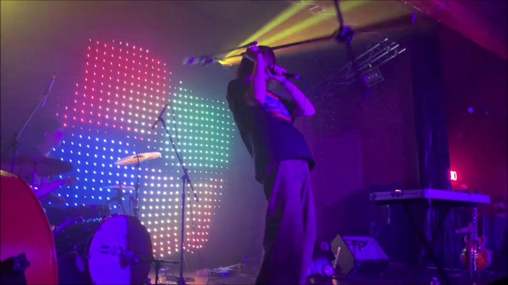

Shared Frequencies is an online community radio station started in early 2019 in Austin. We mostly stream local DJs, but also host multiple other artists as well.

My roles include technical expert, stream runner, artist, and more. Shared Frequencies has become a catch-all creative outlet for me in the past year.
Technical Design
Before I could get too creative, I had to design the studio space and the signal flow.

The audio and video run into a PC. The PC runs TouchDesigner, realtime visual processing software, and OBS, a streaming software. The live video streams to our Facebook, Twitch, YouTube, and website.
Streams
We invite DJs on the stream for monthly residencies. In the video below, I stream with my fellow label-owner Dreamgoth for our Helldotcom residency.
In this stream, I am doing some extreme video processing that isn't typical for Shared Frequencies. However, since it was my stream I decided to experiment a bit.
LED Wall
During the summer of 2019, I had a creative itch to build something physical. I saw George Clanton play a show a few weeks before, and while he was great, I was mesmerized by the LED wall behind him. An LED wall is nothing novel, but what I noticed is that it was built on cloth material with two easy stands so he could tour around with it. I got the chance to talk to him after the show, but he was secretive about the details of the wall.

I decided this would make for an interesting research project. My initial plan was to run TouchDesigner through an Arduino board. After some experimenting, I was determined I could make interesting visuals work on the limited resolution.

I planned out the physical design and it took me a few days to put together. I programmed some "default" visuals on the wall for a few Shared Frequencies streams.
Unfortunately, I eventually realized that the Arduino board I didn't have the bandwidth to support the data from TouchDesigner quick enough, so the project has been shelved for now.